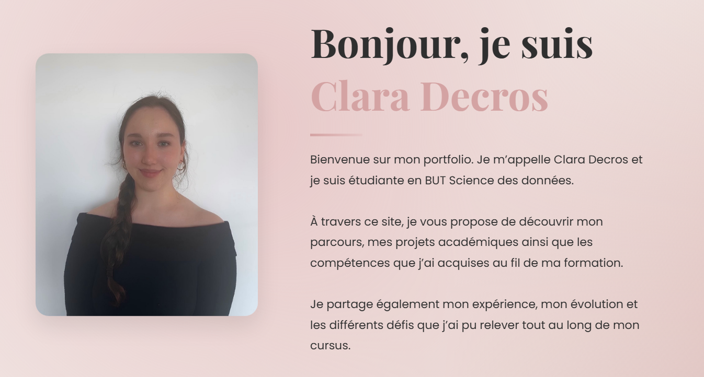
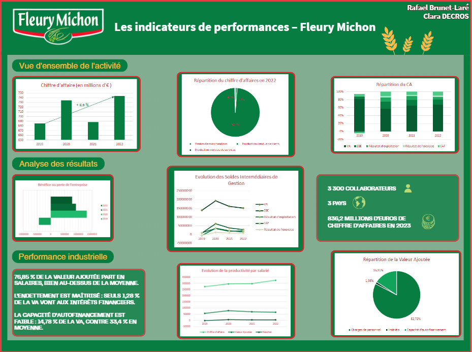
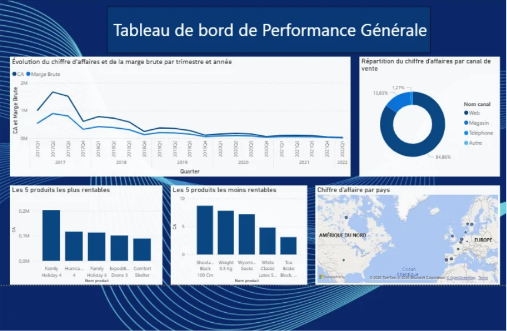
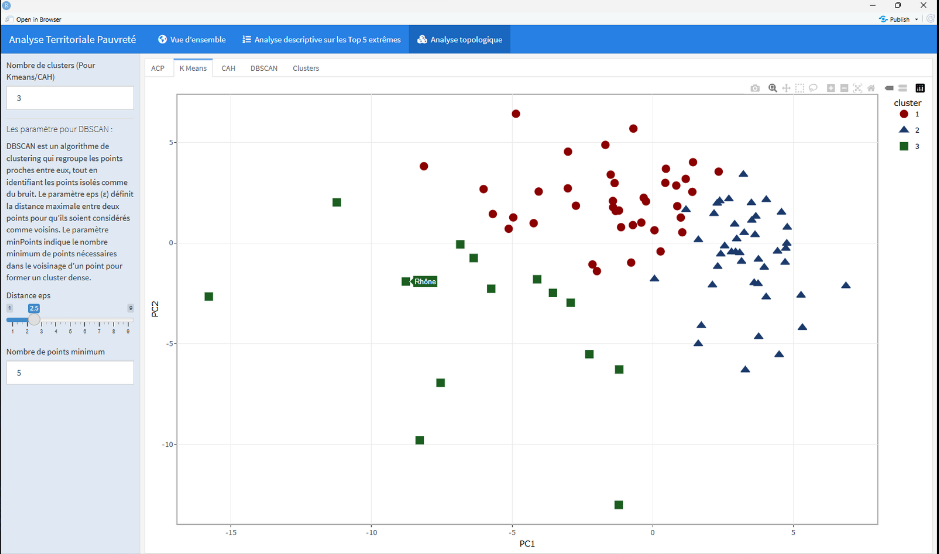

Mes Projets

Site Web Portfolio
Développement d'un portfolio personnel avec HTML, CSS et JS.

Indicateurs de performance
Créer un tableau de bord de graphiques et d'indicateurs pour "Fleury Michon".

Reporting Décisionnel Power BI
Traitement de données brutes et création de 20 indicateurs de pilotage stratégiques.

Reporting d’une analyse multivariée
Développement d'un outil visuel pour le suivi de la pauvreté en France, incluant des analyses descriptives et des méthodes statistiques avancées comme l'ACP et le Clustering.

Projet 5
Description courte de votre cinquième projet et de ses objectifs.

Projet 6
Description courte de votre sixième projet et de ses objectifs.